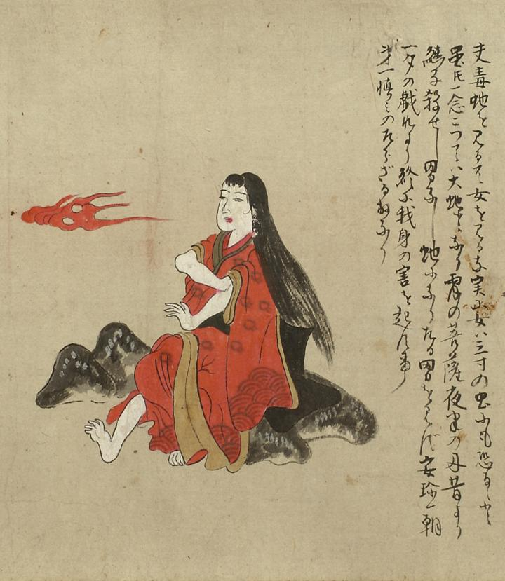

清姫；キヨヒメ，炎；ホノオ，吐息；トイキ

長髪をたらし、赤い着物を着た清姫が岩に腰掛けている。右手で左の腕まくりをし、右足を前に出している。清姫の顔の左側に炎が描かれている。詞書には「夫毒蛇を見るに女を見るな実に女は三寸の虫にも恐るゝと雖も一念たつては大蛇となり宵の菩薩夜半に及昔より継子殺せし男なし蛇になりたる男を見ず安珍一朝一夕の戯れより終に我が身の害を起す事第一慎みのたらざる故なり」とある。
出典：親書誌：U426_nichibunken_0055：道成寺縁起；ドウジョウジエンギ／日付：2006／資源識別子：U426_nichibunken_0055_0003_0000
Copyright (c)2010- International Research Center for Japanese Studies, Kyoto, Japan. All rights reserved.